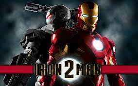
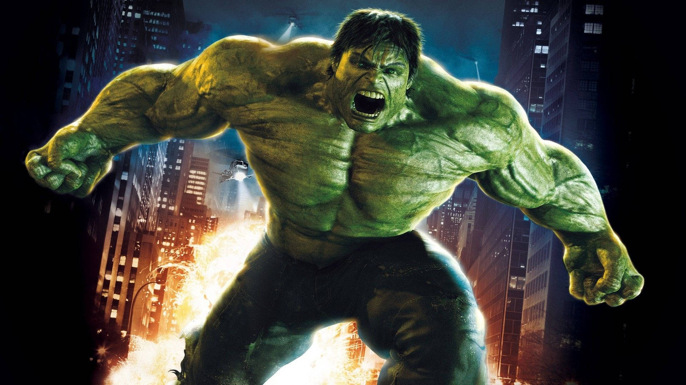
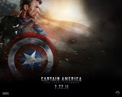
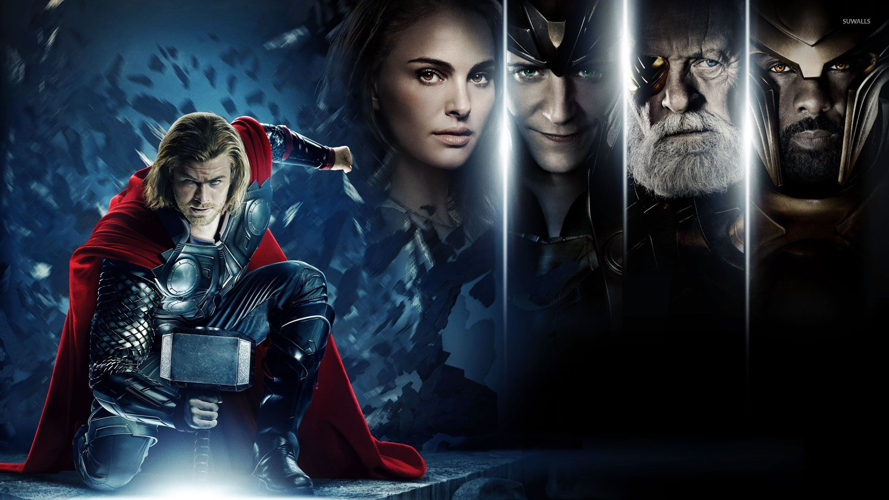

The first set of movies introduces the main universe in which the films are set, as well as core characters such as Iron Man, Captain America, Thor, Hulk, Black Widow, Hawkeye, Nick Fury and War Machine, and organizations such as S.H.I.E.L.D. and HYDRA. Many of the films in Phase One focus on the Tesseract, an extraterrestrial artifact that is later established to contain one of the six Infinity Stones. The final film, The Avengers, involves the villains Loki and Thanos allying to steal the Tesseract and conquer Earth, leading to the formation of the Avengers.
Descriptions
Iron Man (2008)
A billionaire industrialist and genius inventor, Tony Stark (Robert Downey Jr.), is conducting weapons tests overseas, but terrorists kidnap him to force him to build a devastating weapon. Instead, he builds an armored suit and upends his captors. Returning to America, Stark refines the suit and uses it to combat crime and terrorism.
Iron Man II (2010)

With the world now aware that he is Iron Man, billionaire inventor Tony Stark (Robert Downey Jr.) faces pressure from all sides to share his technology with the military. He is reluctant to divulge the secrets of his armored suit, fearing the information will fall into the wrong hands. With Pepper Potts (Gwyneth Paltrow) and "Rhodey" Rhodes (Don Cheadle) by his side, Tony must forge new alliances and confront a powerful new enemy.
The Hulk (2008)

Scientist Bruce Banner (Edward Norton) desperately seeks a cure for the gamma radiation that contaminated his cells and turned him into The Hulk. Cut off from his true love Betty Ross (Liv Tyler) and forced to hide from his nemesis, Gen. Thunderbolt Ross (William Hurt), Banner soon comes face-to-face with a new threat: a supremely powerful enemy known as The Abomination (Tim Roth).
Captain America: The First Avenger(2011)

It is 1941 and the world is in the throes of war. Steve Rogers (Chris Evans) wants to do his part and join America's armed forces, but the military rejects him because of his small stature. Finally, Steve gets his chance when he is accepted into an experimental program that turns him into a supersoldier called Captain America. Joining forces with Bucky Barnes (Sebastian Stan) and Peggy Carter (Hayley Atwell), Captain America leads the fight against the Nazi-backed HYDRA organization.
Thor(2011)

As the son of Odin (Anthony Hopkins), king of the Norse gods, Thor (Chris Hemsworth) will soon inherit the throne of Asgard from his aging father. However, on the day that he is to be crowned, Thor reacts with brutality when the gods' enemies, the Frost Giants, enter the palace in violation of their treaty. As punishment, Odin banishes Thor to Earth. While Loki (Tom Hiddleston), Thor's brother, plots mischief in Asgard, Thor, now stripped of his powers, faces his greatest threat.
Marvel's The Avengers(2012)
When Thor's evil brother, Loki (Tom Hiddleston), gains access to the unlimited power of the energy cube called the Tesseract, Nick Fury (Samuel L. Jackson), director of S.H.I.E.L.D., initiates a superhero recruitment effort to defeat the unprecedented threat to Earth. Joining Fury's "dream team" are Iron Man (Robert Downey Jr.), Captain America (Chris Evans), the Hulk (Mark Ruffalo), Thor (Chris Hemsworth), the Black Widow (Scarlett Johansson) and Hawkeye (Jeremy Renner).
Ratings
Movie
Year
Rating
Iron Man
2008
94
Iron Man II
2010
71
The Hulk
2008
67
Captain America: The First Avenger
2011
79
Thor
2011
77
Marvel's The Avengers
2012
91
Total Rating: 80
Marvel Phase I was the start of many movies to come as it showed the backstories of every avenger. In my opinion, it is not really the best phase but it certainly is a good one.